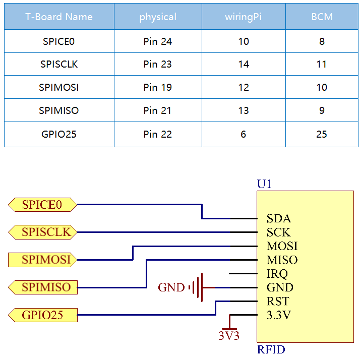

Note
Bonjour et bienvenue dans la Communauté Facebook des passionnés de Raspberry Pi, Arduino et ESP32 de SunFounder ! Plongez plus profondément dans l’univers des Raspberry Pi, Arduino et ESP32 avec d’autres passionnés.
Pourquoi rejoindre ?
Support d’experts : Résolvez les problèmes après-vente et les défis techniques avec l’aide de notre communauté et de notre équipe.
Apprendre et partager : Échangez des astuces et des tutoriels pour améliorer vos compétences.
Aperçus exclusifs : Accédez en avant-première aux annonces de nouveaux produits et aux aperçus.
Réductions spéciales : Profitez de réductions exclusives sur nos produits les plus récents.
Promotions festives et cadeaux : Participez à des cadeaux et des promotions de vacances.
👉 Prêt à explorer et à créer avec nous ? Cliquez [Ici] et rejoignez-nous aujourd’hui !
2.2.7 Module RFID MFRC522
Introduction
L’identification par radiofréquence (RFID) désigne les technologies utilisant la communication sans fil entre un objet (ou étiquette) et un dispositif d’interrogation (ou lecteur) pour suivre et identifier automatiquement ces objets.
Parmi les applications les plus courantes de cette technologie, on trouve les chaînes d’approvisionnement au détail, les chaînes d’approvisionnement militaires, les méthodes de paiement automatisées, le suivi et la gestion des bagages, le suivi des documents et la gestion pharmaceutique, pour n’en citer que quelques-unes.
Dans ce projet, nous allons utiliser la RFID pour la lecture et l’écriture.
Composants Nécessaires
Pour ce projet, nous avons besoin des composants suivants :

Schéma Électrique
Procédures Expérimentales
Étape 1 : Construire le circuit.

Étape 2 : Activez le SPI avant de commencer l’expérience, voir SPI Configuration pour les détails.
Étape 3 : Accédez au dossier du code.
cd ~/davinci-kit-for-raspberry-pi/python-pi5
Étape 4 : Exécutez 2.2.10_write.py.
sudo python3 2.2.10_write.py
Étape 5 : Après avoir exécuté le programme, entrez le texte que vous souhaitez écrire (jusqu’à 16 caractères), par exemple « welcome », puis appuyez sur Entrée pour confirmer. Ensuite, le message « Les données ont été écrites sur la carte » s’affichera. Enfin, appuyez sur Ctrl+C pour arrêter l’exécution du code.
Veuillez placer votre carte RFID sur le lecteur...
Appuyez sur Ctrl-C pour arrêter.
Carte RFID détectée!
UID de la carte: 9BF6210B
Veuillez entrer les données à écrire sur la carte (jusqu'à 16 caractères): welcome
Authentification du bloc 8 réussie
4 backdata &0x0F == 0x0A 10
Données écrites
Les données ont été écrites sur la carte
Lecture des données du bloc 8:
Secteur 8 [119, 101, 108, 99, 111, 109, 101, 0, 0, 0, 0, 0, 0, 0, 0, 0]
Étape 6 : Exécutez maintenant 2.2.10_read.py pour lire les informations du tag ou de la carte que vous avez écrites.
sudo python3 2.2.10_read.py
Étape 7 : Après l’exécution, vous obtiendrez les informations suivantes.
Veuillez placer votre carte RFID sur le lecteur...
Appuyez sur Ctrl-C pour arrêter.
Carte RFID détectée!
UID de la carte: 9BF6210B
Authentification du bloc 8 réussie
Secteur 8 [119, 101, 108, 99, 111, 109, 101, 0, 0, 0, 0, 0, 0, 0, 0, 0]
MFRC522_Read type de retour: <class 'int'>, Données: [119, 101, 108, 99, 111, 109, 101, 0, 0, 0, 0, 0, 0, 0, 0, 0]
Secteur 8 [119, 101, 108, 99, 111, 109, 101, 0, 0, 0, 0, 0, 0, 0, 0, 0]
Données lues: welcome
Analyse du code pour 2.2.10_write.py
Ce script Python écrit des données fournies par l’utilisateur sur une carte RFID en utilisant le lecteur RFID MFRC522. Le script vérifie continuellement la présence d’une carte, invite l’utilisateur à entrer des données à écrire, et confirme le succès des opérations d’écriture et de lecture.
Importations
MFRC522: Importe les fonctions et classes nécessaires aux opérations du lecteur RFID.signalettime:signalest utilisé pour gérer la terminaison contrôlée via SIGINT (Ctrl+C), ettimeest utilisé pour ajouter des délais dans la boucle principale.
Variable Globale
continue_reading: Contrôle la boucle principale, permettant au script de se terminer proprement lorsque défini surFalse.
continue_reading = True
Gestion des Signaux :
Fonction
end_read: Cette fonction est déclenchée lorsqueCtrl+C(SIGINT) est détecté. Elle définitcontinue_readingsurFalse, permettant ainsi au script de se terminer proprement.signal.signal(signal.SIGINT, end_read): Lie le signal SIGINT (Ctrl+C) àend_read, de sorte qu’en cas d’interruption, le script affiche un message et se termine proprement.
signal.signal(signal.SIGINT, end_read)
Configuration du Lecteur RFID :
rfid_reader: Une instance de la classeMFRC522, utilisée pour contrôler les opérations du lecteur RFID.default_key: Une liste de 6 octets, typiquement0xFFpour chaque octet. C’est la clé d’authentification par défaut pour la plupart des cartes RFID.
# Créer une instance de la classe MFRC522 rfid_reader = MFRC522.MFRC522() # Définir la clé par défaut (6 octets, par défaut tous à 0xFF) default_key = [0xFF, 0xFF, 0xFF, 0xFF, 0xFF, 0xFF]
Instructions pour l’Utilisateur
Le script affiche des instructions dans la console, informant l’utilisateur de placer sa carte RFID sur le lecteur et d’utiliser
Ctrl+Cpour quitter.print("Veuillez placer votre carte RFID sur le lecteur...") print("Appuyez sur Ctrl-C pour arrêter.")
Boucle Principale : Détection, Écriture et Lecture de Données
Détection de Carte : Le script appelle continuellement
MFRC522_Requestpour détecter les cartes RFID. Si une carte est détectée (status == rfid_reader.MI_OK), il passe à l’étape suivante.
(status, TagType) = rfid_reader.MFRC522_Request(rfid_reader.PICC_REQIDL) # Si une carte est détectée if status == rfid_reader.MI_OK: print("Carte RFID détectée!") ... else: # Attendre un peu avant de réessayer time.sleep(0.5)
Récupération de l’UID de la Carte : Appelle
MFRC522_SelectTagSNpour récupérer l’identifiant unique (UID) de la carte. Si elle réussit, l’UID est converti en une chaîne hexadécimale et imprimé. L’UID est nécessaire pour l’authentification.
(status, uid) = rfid_reader.MFRC522_SelectTagSN() # Si nous avons l'UID, continuer if status == rfid_reader.MI_OK: # Afficher l'UID uid_str = ''.join(['%02X' % i for i in uid]) print("UID de la carte: %s" % uid_str) ... else: print("Impossible d'obtenir l'UID de la carte")
Préparation des Données :
Demande de Saisie : L’utilisateur est invité à entrer les données à écrire sur la carte (jusqu’à 16 caractères).
Troncature des Données : Les données sont tronquées à 16 caractères si l’utilisateur en entre plus.
Conversion de Chaîne en Octets : Les données saisies par l’utilisateur sont converties en une liste d’octets remplie à 16 octets, comme requis par le format de stockage de la carte RFID.
write_data = input("Veuillez entrer les données à écrire sur la carte (jusqu'à 16 caractères) : ") # S'assurer que les données ne dépassent pas 16 caractères write_data = write_data[:16] # Convertir la chaîne en liste d'octets, remplir jusqu'à 16 octets data_to_write = [0x00]*16 string_bytes = write_data.encode('utf-8') for i in range(len(string_bytes)): data_to_write[i] = string_bytes[i]
Spécification du Numéro de Bloc : Le script spécifie le bloc 8 pour écrire les données. Remarque : Les numéros de bloc doivent éviter les blocs de remorque de secteur, généralement le dernier bloc de chaque secteur, car ils sont utilisés pour les informations de contrôle.
block_num = 8 # Par exemple, choisir le bloc 8
Authentification de la Carte :
MFRC522_Authauthentifie le bloc spécifié en utilisant la clé par défaut et l’UID. Si l’authentification est réussie, le script procède à l’écriture des données. Sinon, un message d’erreur est affiché, et l’encryptage est arrêté.
status = rfid_reader.MFRC522_Auth(rfid_reader.PICC_AUTHENT1A, block_num, default_key, uid) if status == rfid_reader.MI_OK: print("Authentification du bloc %d réussie" % block_num) ... else: print("Échec de l'authentification") rfid_reader.MFRC522_StopCrypto1()
Écriture des Données sur la Carte :
MFRC522_Writeécrit les données préparées sur le bloc spécifié de la carte RFID. Après l’écriture, un message confirme que les données ont été correctement écrites sur la carte.
rfid_reader.MFRC522_Write(block_num, data_to_write) print("Les données ont été écrites sur la carte")
Vérification des Données Écrites : Pour vérifier l’opération d’écriture, le script relit les données du même bloc en utilisant
MFRC522_Read. Les données récupérées sont imprimées pour permettre à l’utilisateur de vérifier les données.
print("Lecture des données du bloc %d:" % block_num) rfid_reader.MFRC522_Read(block_num)
Arrêt de l’Encryptage :
MFRC522_StopCrypto1arrête le processus d’encryptage après les opérations. Cette étape est nécessaire pour réinitialiser l’état de communication de la carte.
# Arrêter l'encryptage rfid_reader.MFRC522_StopCrypto1()
Sortie de la Boucle : Après l’écriture et la vérification des données,
continue_readingest défini surFalsepour sortir de la boucle et terminer le script.continue_reading = False
Points Clés
Terminaison Contrôlée : Le script capture SIGINT (Ctrl+C) pour se terminer en toute sécurité et afficher un message, permettant à toute opération en cours de se terminer avant de quitter.
Interaction Utilisateur : Invite l’utilisateur à saisir des données, permettant ainsi de personnaliser les données à chaque fois que la carte est écrite.
Authentification : S’assure que l’accès au bloc spécifié est sécurisé, gérant les échecs d’authentification de manière contrôlée.
Formatage des Données : Convertit les données en chaîne de caractères en un format de liste d’octets compatible avec la structure de stockage de la carte, avec remplissage si nécessaire.
Vérification : Relit les données de la carte pour confirmer une écriture réussie, améliorant la fiabilité.
Modularité : Le script est bien structuré avec des fonctionnalités claires pour la détection, l’écriture et la lecture, ce qui le rend plus facile à suivre et à maintenir.
Ce script est adapté aux applications nécessitant à la fois des capacités de lecture et d’écriture avec des cartes RFID, telles que le contrôle d’accès ou l’identification d’utilisateur.
Explication du code pour 2.2.10_read.py
Ce script Python utilise un lecteur RFID (MFRC522) pour lire les données des cartes RFID. Le script est structuré pour vérifier en continu la présence de cartes, récupérer leurs données, et gérer proprement les demandes de sortie grâce à la gestion des signaux.
Importations :
MFRC522: Ce module fournit les méthodes pour interagir avec le lecteur RFID MFRC522.signalettime: Utilisés pour gérer la terminaison du script (par exemple, avecCtrl+C) et contrôler le délai de certaines opérations.
Variables globales :
continue_reading: Un indicateur booléen qui contrôle la boucle principale de lecture, permettant au script de s’arrêter proprement lorsqueCtrl+Cest pressé.
continue_reading = True
Gestion des signaux :
Fonction
end_read: Cette fonction est déclenchée lorsqueCtrl+C(SIGINT) est détecté. Elle définitcontinue_readingsurFalse, permettant ainsi au script de se terminer proprement.signal.signal(signal.SIGINT, end_read): Associe le signal SIGINT (Ctrl+C) àend_read, de sorte qu’en cas d’interruption, le script affiche un message et se termine proprement.
signal.signal(signal.SIGINT, end_read)
Configuration du lecteur RFID :
rfid_reader: Une instance de la classeMFRC522, utilisée pour contrôler les opérations du lecteur RFID.default_key: Une liste de 6 octets, généralement0xFFpour chaque octet. C’est la clé d’authentification par défaut pour la plupart des cartes RFID.block_num: Spécifie le numéro de bloc à lire sur la carte RFID, ici défini sur le bloc8. Le numéro de bloc doit correspondre à celui utilisé lors de l’écriture des données sur la carte.
# Créer une instance de la classe MFRC522 rfid_reader = MFRC522.MFRC522() # Définir la clé par défaut (6 octets, par défaut tous à 0xFF) default_key = [0xFF, 0xFF, 0xFF, 0xFF, 0xFF, 0xFF] # Définir le numéro de bloc à lire (doit correspondre au bloc utilisé lors de l'écriture) block_num = 8 # Par exemple, bloc 8
Instructions pour l’utilisateur
Le script affiche des instructions dans la console, informant l’utilisateur de placer sa carte RFID sur le lecteur et d’utiliser
Ctrl+Cpour quitter.print("Veuillez placer votre carte RFID sur le lecteur...") print("Appuyez sur Ctrl-C pour arrêter.")
Boucle principale : Détection de carte RFID et lecture des données.
Recherche de cartes : La boucle principale appelle continuellement
MFRC522_Requestpour rechercher des cartes RFID. Si une carte est détectée, elle passe aux étapes suivantes.(status, TagType) = rfid_reader.MFRC522_Request(rfid_reader.PICC_REQIDL) if status == rfid_reader.MI_OK: print("Carte RFID détectée!") ... else: # Si aucune carte n'est détectée, attendre un court moment avant de réessayer time.sleep(0.5)
Récupération de l’UID de la carte : Utilise
MFRC522_SelectTagSNpour récupérer l’identifiant unique (UID) de la carte. Si réussi, il convertit l’UID en une chaîne hexadécimale et l’affiche. Cet UID est nécessaire pour authentifier la carte.(status, uid) = rfid_reader.MFRC522_SelectTagSN() # Si l'UID a été récupéré avec succès, continuer if status == rfid_reader.MI_OK: # Convertir la liste UID en chaîne hexadécimale uid_str = ''.join(['%02X' % i for i in uid]) print("UID de la carte : %s" % uid_str) ... else: print("Impossible d'obtenir l'UID de la carte")
Authentification de la carte :
MFRC522_Authauthentifie l’accès au bloc spécifié en utilisant la clé par défaut et l’UID de la carte. Si l’authentification réussit, le script passe à la lecture des données du bloc.status = rfid_reader.MFRC522_Auth(rfid_reader.PICC_AUTHENT1A, block_num, default_key, uid) if status == rfid_reader.MI_OK: print("Authentification du bloc %d réussie" % block_num) ... else: print("Échec de l'authentification, code de statut : %s" % status) rfid_reader.MFRC522_StopCrypto1()
Lecture des données :
MFRC522_Readlit les données du bloc spécifié.data: Cette variable contient les données brutes du bloc si l’opération de lecture réussit.Le script convertit chaque octet de
dataen caractères et supprime tout octet nul de remplissage (\x00). Les données traitées sont ensuite affichées.
read_status, data = rfid_reader.MFRC522_Read(block_num) print(f"Type de retour de MFRC522_Read : {type(read_status)}, Données : {data}") if read_status == rfid_reader.MI_OK and data: print(f"Secteur {block_num} {data}") # Convertir les données en chaîne et supprimer tout octet nul de remplissage read_data = ''.join([chr(byte) for byte in data]).rstrip('\x00') print("Données lues : %s" % read_data) else: print("Échec de la lecture des données, code de statut : %s" % read_status)
MFRC522_StopCrypto1est appelé pour arrêter l’encryptage et réinitialiser la communication avec la carte.# Arrêter l'encryptage sur la carte rfid_reader.MFRC522_StopCrypto1()
Attente entre les lectures : Si aucune carte n’est détectée, la boucle se met en pause pendant 0,5 seconde avant de réessayer.
else: # Si aucune carte n'est détectée, attendre un court moment avant de réessayer time.sleep(0.5)
Points clés
Sortie propre : Le script capture le signal
SIGINTpour une terminaison contrôlée, permettant au lecteur RFID de terminer les opérations en cours.Gestion du bloc et de l’UID : Utilise le bloc et l’UID comme composants clés pour lire les données d’une carte RFID, avec une gestion appropriée des erreurs d’authentification et de lecture.
Conception modulaire : L’utilisation de fonctions dédiées du module
MFRC522rend le script lisible et modulaire, simplifiant les opérations RFID telles que l’authentification et la lecture de données.
Image du Phénomène